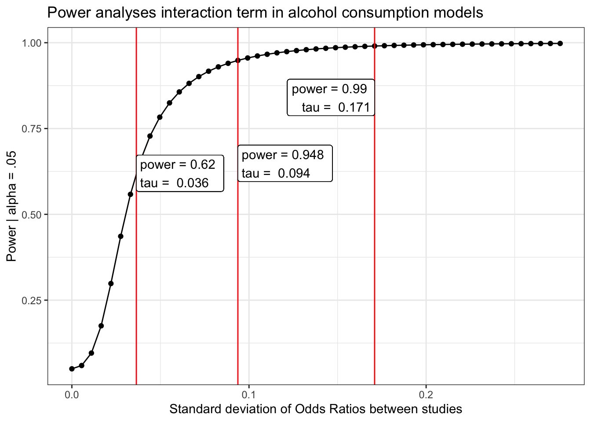

This document contains the power analysis for the primary models of interest. For each model, we display the power to detect significant \(\tau\) values, or different standard deviations of between-study effects (reported in the metric of odds ratios). We also mark the level of \(tau\) estimated by our model and the power to detect this effect. We note here that we are well powered to detect between-study variability that is commonly found in psychology (van Erp, Verhagen, Grasman, & Wagenmakers, 2017).
Many thanks to Brenton Wiernik, who developed the code to calculate power based on our analyses!

library(tidyverse)
library(metafor)
library(papaja)
library(here)# Based on methods described by Hedges and Pigott, https://doi.org/10.1037/1082-989X.9.4.426, p. 438
# Written 2019-10-25 by Brenton M. Wiernik
# Licensed GPL v3.0
power_curve <- function(object, tau, level = .95) {
if (! inherits(object, "rma.uni")) stop("'object' must be an object of class 'rma.uni'")
tau2 <- tau^2
obs_tau2 <- object$tau2
obs_tau <- sqrt(obs_tau2)
obs_H2 <- object$H2
s2 <- obs_tau2 / (obs_H2 - 1)
df <- object$k - object$p
crit <- qchisq(.95, df)
wi <- 1 / object$vi
a <- sum(wi) - sum(wi^2) / sum(wi)
mu_q <- function(tau2) a * tau2 + df
b <- function(tau2) df + 2 * a * tau2 +
(sum(wi^2) - 2 * sum(wi^3) / sum(wi) +
sum(wi^2)^2 / sum(wi)^2) * tau2^2
var_q <- function(tau2) 2 * b(tau2)
r <- function(tau2) var_q(tau2) / (2 * mu_q(tau2))
s <- function(tau2) 2 * mu_q(tau2)^2 / var_q(tau2)
H <- function(tau2) pchisq(crit / r(tau2), s(tau2))
power <- 1 - H(tau2)
out <- list(obs_tau = obs_tau, power = data.frame(tau = tau, power = power))
return(out)
}We set a vector of \(\tau\) values to evaluate.
tau = seq(0, .5, .01) # possible values of the standard deviation of effect sizesload(here("behavior/created data/meta_smoker_intr.Rdata"))
power_smoker = power_curve(smoker.intr.rma, tau, level = .95)
obs = power_curve(smoker.intr.rma, power_smoker$obs_tau, level =.95)$power[1,2]
#for which tau are we powered?
pwr.95=.95
pwr.99=.99
tau.95 = which(abs(power_smoker$power$power-pwr.95)==min(abs(power_smoker$power$power-pwr.95)))
pwr.95 = power_smoker$power$power[tau.95]
tau.95 = power_smoker$power$tau[tau.95]
tau.99 = which(abs(power_smoker$power$power-pwr.99)==min(abs(power_smoker$power$power-pwr.99)))
pwr.99 = power_smoker$power$power[tau.99]
tau.99 = power_smoker$power$tau[tau.99]
power_smoker$power %>%
mutate(tau_d = tau/(pi/sqrt(3))) %>%
ggplot(aes(x = tau_d, y = power)) +
geom_point()+
geom_line()+
geom_vline(aes(xintercept = power_smoker$obs_tau/(pi/sqrt(3))), color = "red") +
geom_vline(aes(xintercept = tau.95/(pi/sqrt(3))), color = "red") +
geom_vline(aes(xintercept = tau.99/(pi/sqrt(3))), color = "red") +
geom_label(aes(x = power_smoker$obs_tau/(pi/sqrt(3)), y = obs,
label = paste("power =", round(obs, 3),
"\ntau = ", round( power_smoker$obs_tau/(pi/sqrt(3)), 3))), hjust = "inward")+
geom_label(aes(x = tau.95/(pi/sqrt(3)), y = pwr.95-.3,
label = paste("power =", round(pwr.95, 3),
"\ntau = ", round( tau.95/(pi/sqrt(3)), 3))), hjust = "inward")+
geom_label(aes(x = tau.99/(pi/sqrt(3)), y = pwr.99-.15,
label = paste("power =", round(pwr.99, 3),
"\ntau = ", round( tau.99/(pi/sqrt(3)), 3))), hjust = "inward")+
labs(x = "Standard deviation of Odds Ratios between studies",
y = "Power | alpha = .05",
title = "Power analyses interaction term in smoking models") +
theme_bw()load(here("behavior/created data/meta_drinker_intr.Rdata"))
power_drinker = power_curve(drinker.intr.rma, tau, level = .95)
obs = power_curve(drinker.intr.rma, power_drinker$obs_tau, level =.95)$power[1,2]
#for which tau are we powered?
pwr.95=.95
pwr.99=.99
tau.95 = which(abs(power_drinker$power$power-pwr.95)==min(abs(power_drinker$power$power-pwr.95)))
pwr.95 = power_drinker$power$power[tau.95]
tau.95 = power_drinker$power$tau[tau.95]
tau.99 = which(abs(power_drinker$power$power-pwr.99)==min(abs(power_drinker$power$power-pwr.99)))
pwr.99 = power_drinker$power$power[tau.99]
tau.99 = power_drinker$power$tau[tau.99]
power_drinker$power %>%
mutate(tau_d = tau/(pi/sqrt(3))) %>%
ggplot(aes(x = tau_d, y = power)) +
geom_point()+
geom_line()+
geom_vline(aes(xintercept = power_drinker$obs_tau/(pi/sqrt(3))), color = "red") +
geom_vline(aes(xintercept = tau.95/(pi/sqrt(3))), color = "red") +
geom_vline(aes(xintercept = tau.99/(pi/sqrt(3))), color = "red") +
geom_label(aes(x = power_drinker$obs_tau/(pi/sqrt(3)), y = obs,
label = paste("power =", round(obs, 3),
"\ntau = ", round( power_drinker$obs_tau/(pi/sqrt(3)), 3))), hjust = "inward")+
geom_label(aes(x = tau.95/(pi/sqrt(3)), y = pwr.95-.3,
label = paste("power =", round(pwr.95, 3),
"\ntau = ", round( tau.95/(pi/sqrt(3)), 3))), hjust = "inward")+
geom_label(aes(x = tau.99/(pi/sqrt(3)), y = pwr.99-.15,
label = paste("power =", round(pwr.99, 3),
"\ntau = ", round( tau.99/(pi/sqrt(3)), 3))), hjust = "inward")+
labs(x = "Standard deviation of Odds Ratios between studies",
y = "Power | alpha = .05",
title = "Power analyses interaction term in alcohol consumption models") +
theme_bw()load(here("behavior/created data/meta_active_intr.Rdata"))
power_active = power_curve(active.intr.rma, tau, level = .95)
obs = power_curve(active.intr.rma, power_active$obs_tau, level =.95)$power[1,2]
#for which tau are we powered?
pwr.95=.95
pwr.99=.99
tau.95 = which(abs(power_active$power$power-pwr.95)==min(abs(power_active$power$power-pwr.95)))
pwr.95 = power_active$power$power[tau.95]
tau.95 = power_active$power$tau[tau.95]
tau.99 = which(abs(power_active$power$power-pwr.99)==min(abs(power_active$power$power-pwr.99)))
pwr.99 = power_active$power$power[tau.99]
tau.99 = power_active$power$tau[tau.99]
power_active$power %>%
mutate(tau_d = tau/(pi/sqrt(3))) %>%
ggplot(aes(x = tau_d, y = power)) +
geom_point()+
geom_line()+
geom_vline(aes(xintercept = power_active$obs_tau/(pi/sqrt(3))), color = "red") +
geom_vline(aes(xintercept = tau.95/(pi/sqrt(3))), color = "red") +
geom_vline(aes(xintercept = tau.99/(pi/sqrt(3))), color = "red") +
geom_label(aes(x = power_active$obs_tau/(pi/sqrt(3)), y = obs,
label = paste("power =", round(obs, 3),
"\ntau = ", round( power_active$obs_tau/(pi/sqrt(3)), 3))), hjust = "inward")+
geom_label(aes(x = tau.95/(pi/sqrt(3)), y = pwr.95-.3,
label = paste("power =", round(pwr.95, 3),
"\ntau = ", round( tau.95/(pi/sqrt(3)), 3))), hjust = "inward")+
geom_label(aes(x = tau.99/(pi/sqrt(3)), y = pwr.99-.15,
label = paste("power =", round(pwr.99, 3),
"\ntau = ", round( tau.99/(pi/sqrt(3)), 3))), hjust = "inward")+
labs(x = "Standard deviation of Odds Ratios between studies",
y = "Power | alpha = .05",
title = "Power analyses interaction term in physical activity models") +
theme_bw()